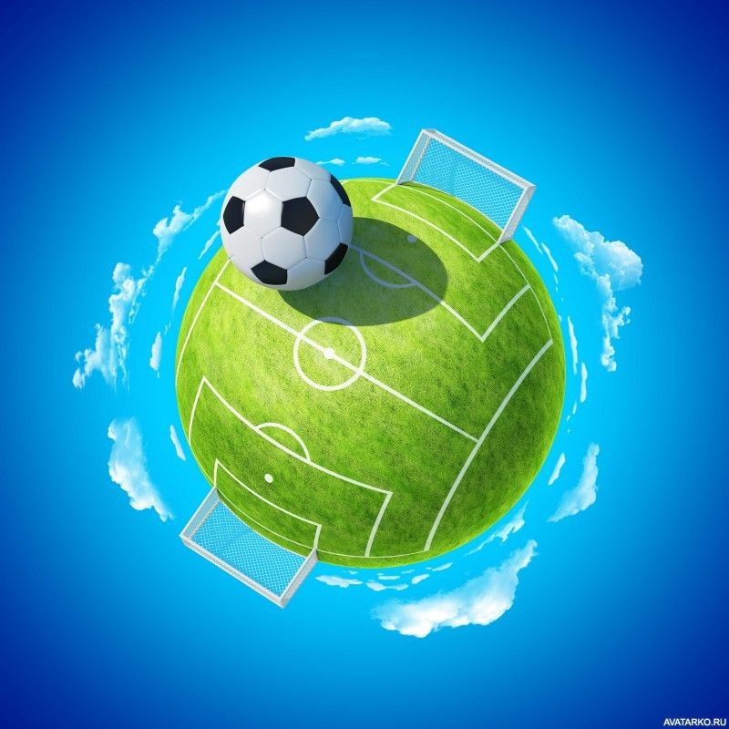

Моя страница
Новости
Сообщения
Друзья
Группы
Фотографии
Музыка
Видео
Новости
Сообщения
Друзья
Группы
Фотографии
Музыка
Видео
Друзья 1231
Messi
Mark
David
Andrei
Ronaldo
Roney
Messi
Mark
David
Andrei
Ronaldo
Roney
Miras Syrbek
Life is good :)
Life is good :)
Online
День рождения:
Город:
Семейное положение:
Место работы:
Веб-сайт:
Город:
Семейное положение:
Место работы:
Веб-сайт:
24 сентября 2002 г.
Алматы
Холост
BITLAB Academy
https://github.com/mirrras
Алматы
Холост
BITLAB Academy
https://github.com/mirrras
1231
друг
224
подписчика
95
фотографии
969
видеозаписей
809
аудеозаписей
140
страниц
Мой фотографии

Miras Syrbek
5 апр в 17:42
Наше представление о возможностях определяется тем, как мы оцениваем
ситуацию. Что мы видим в ней: испытание или угрозу? Сосредоточиваемся
на перспективе ее использования или на неудаче? Эти возможности — некоторые
большие, некоторые совсем крошечные — встречаются каждый день. Одни их
замечают, другие нет. Кто-то за них хватается, кто-то отталкивает. А что
делаете вы? Наше представление о возможностях определяется тем, как мы
оцениваем ситуацию.Что мы видим в ней: испытание или угрозу? Сосредоточиваемся
на перспективе ее
использования или на неудаче? Эти возможности — некоторые большие, некоторые
Кто-то за них хватается, кто-то отталкивает. А что делаете вы?
Наше представление о возможностях определяется тем, как мы оцениваем ситуацию.
Что мы видим в ней: испытание или угрозу? Сосредоточиваемся на перспективе ее
использования или на неудаче? Эти возможности — некоторые большие, некоторые
совсем крошечные — встречаются каждый день. Одни их замечают, другие нет.
Кто-то за них хватается, кто-то отталкивает. А что делаете вы?
ситуацию. Что мы видим в ней: испытание или угрозу? Сосредоточиваемся
на перспективе ее использования или на неудаче? Эти возможности — некоторые
большие, некоторые совсем крошечные — встречаются каждый день. Одни их
замечают, другие нет. Кто-то за них хватается, кто-то отталкивает. А что
делаете вы? Наше представление о возможностях определяется тем, как мы
оцениваем ситуацию.Что мы видим в ней: испытание или угрозу? Сосредоточиваемся
на перспективе ее
использования или на неудаче? Эти возможности — некоторые большие, некоторые
Кто-то за них хватается, кто-то отталкивает. А что делаете вы?
Наше представление о возможностях определяется тем, как мы оцениваем ситуацию.
Что мы видим в ней: испытание или угрозу? Сосредоточиваемся на перспективе ее
использования или на неудаче? Эти возможности — некоторые большие, некоторые
совсем крошечные — встречаются каждый день. Одни их замечают, другие нет.
Кто-то за них хватается, кто-то отталкивает. А что делаете вы?